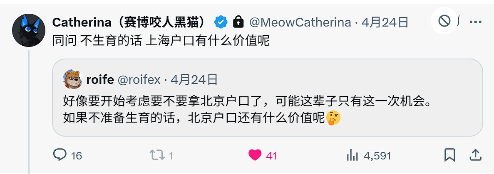

たたなこ
@tatanakots
@kukmoon97 感觉没啥用，因为本来出生就是31开头的身份证号，但是不妨碍我住上海的乡下依然是穷鬼

神楽坂谷月🏳️⚧️🍥
@kukmoon97
这里有@MeowCatherina 和 @roifex 两位老师询问北京/上海户口有什么价值。
我认为对跨性别至少有一项好处，就是做完手术改证时可能获得11或31开头的身份证号。你已经把户口迁到北京/上海去了，改证会在你户口所在地的派出所重新生成身份证号，那么北京/上海的派出所只能生成11或31开头的身份证号。 https://t.co/Zwc0gVGFNA